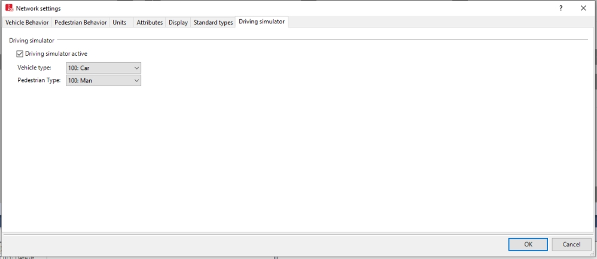

PTV-Vissim co-simulation
CARLA has developed a co-simulation feature with PTV-Vissim. This allows to distribute the tasks at will, and exploit the capabilities of each simulation in favour of the user.
Requisites
In order to run the co-simulation, two things are necessary.
- Buy a license for PTV-Vissim simulator. It is necessary to acquire the Driving Simulator Interface add-on.
- In the PTV-Vissim installation folder, look for a
DrivingSimulatorProxy.dll. Move it toC:\Windows\System32.
Run a co-simulation
Everything related with this feature can be found in Co-Simulation/PTV-Vissim. CARLA provides some examples that contain networks for Town01, and Town03.
To run a co-simulation, use the script PTV-Vissim/run_synchronization.py. This has one mandatory argument containing the PTV-Vissim network, and some other optional arguments.
vissim_network— The vissim network file. This can be an example or a self-created PTV-Vissim network.--carla-host(default: 127.0.0.1) — IP of the carla host server.--carla-port(default: 2000) TCP port to listen to.--vissim-version(default: 2020) — PTV-Vissim version.--step-length(default: 0.05s) — set fixed delta seconds for the simulation time-step.--simulator-vehicles(default: 1) — number of vehicles that will be spawned in CARLA and passed to PTV-Vissim.
python3 run_synchronization.py examples/Town03/Town03.inpx
Warning
To stop the co-simulation, press Ctrl+C in the terminal that run the script.
Both simulations will run in synchrony. The actions or events happening in one simulator will propagate to the other. So far, the feature only includes vehicle movement, and spawning. The spawning is limited due to PTV-Vissim types.
If a vehicle is spawned in CARLA, and the Vehicle Type in PTV-Vissim is set to car, it will spawn a car. No matter if it as a motorbike in CARLA. In the examples provided, the vehicle type is set to car.
If a vehicle is spawned in PTV-Vissim, CARLA will use a vehicle of the same type. The dimensions and characteristics will be similar, but not exactly the same.
Create a new network
In order for a new PTV-Vissim network to run with CARLA, there are a few settings to be done.
- Activate the driving simulator. Go to
Base Data/Network settings/Driving simulatorand enable the option. - Specify the vehicle and pedestrian types. These are the types that will be used in PTV-Vissim to sync with the spawnings done in CARLA. By default are empty.
- Export the network as
.inpx. Create the network, export it, and run the co-simulation withrun_synchronization.py.

Warning
PTV-Vissim will crash if the pedestrian and vehicle types are left empty.
That is all there is so far, regarding for the PTV-Vissim co-simulation with CARLA.
Open CARLA and mess around for a while. If there are any doubts, feel free to post these in the forum.